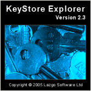
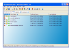

History
Since Wayne Grant's blog pages are no longer accessible,
here are a copy to preserve the history of the construction of KSE.
A History of KeyStore Explorer – Part One (2011-12-22)
KeyStore Explorer (KSE) has existed, in one form or another, since
2002. These days it is a freeware offering but it has not always been
that way. KSE started as an open source project before morphing into a
commercial project. It is only relatively recently that it was
re-licensed to be free for all to use once again. As the utility is now
almost ten years old I feel it is a good time to write a potted history
of KSE.
Inception
Back in mid-2001 I was a relatively green programmer with only four
years of industry experience, mostly in C/C++ and RDBMS. I had just
joined an ISV in Glasgow to cross-train as a Java developer. Many things
interested me about the language notably its simplicity when compared to
C++, the principle of Write Once Run Anywhere (WORA) and the
cross-platform GUI toolkit: Swing.
(WORA and Swing are much maligned but not by me. If you put in the
effort into each you can reap the benefits. I may dip into these topics
in later postings).
All was well in my world. My employer looked to be going places, the
fallout from the Dot Com bubble hadn’t yet bitten and I was working with
interesting technology. However, to get the full benefit of working with
Java and Swing what I really needed was a side-project, something
outside of work where I would be free to develop as a chose, free from
interference. As a bonus it would be great if the side-project was
something new. The last thing I wanted to do was write yet another text
editor or world clock, something that had been done a hundred times
before.
It was then, in the course of my day job, that I came across keytool.
What keytool did intrigued me as I had no previous exposure to
Cryptography. How it presented itself, on the other hand, with its ugly
command-line interface provided me with an opportunity. I decided I
would use Swing to recreate keytool in the form of a friendly GUI. I did
some research and discovered that nobody had yet written a decent GUI
alternative for keytool. I had found my side-project.
Thanks to the Way Back Machine
I have been able to retrieve my exact thoughts at the time. Back then I
wrote on the original tool’s website under the heading of “Why
Bother”:
“As mentioned above Sun already supply keytool with the Java SDK and
the KeyTool GUI is just a GUI implementation of (approximately) the same
functionality. So why bother?
I found keytool to be a bugger to use with it’s many and various
options. Command-line tools are, after all, invariably harder to use
than equivalent GUIs. Secondly keytool forces its users to type in
keystore and protected entry passwords in the clear on the command-line.
This, of course, defeats the whole purpose of protecting keys in a
keystore in the first place! Thirdly I needed a wee project to get me up
and running using Swing.
So in an attempt to create an alternative to the command-line keytool
utility (and get some practise with Swing) I’ve put together the KeyTool
GUI.”
KeyTool GUI
 So KeyTool GUI (KTG) was born with the aim for the application being
that it not be “a bugger to use”. At first progress was slow as
everything was new to me. My Java experience was limited, as was my
exposure to GUI programming and UI design and I knew next to nothing
about cryptography or PKI. However, it was great fun developing all
these new skills. My core Java skills improved far more rapidly than
they would have done through my day job alone. I also greatly improved
as a UI designer by learning as much as I could from existing
applications and various publications. However, what turned out to most
challenging was the world of cryptography and PKI. Fortunately with the
aid of many books and the Java Cryptography Extensions (JCE) and the
Bouncy castle JCE provider I was able to progress in this area
rapidly.
So KeyTool GUI (KTG) was born with the aim for the application being
that it not be “a bugger to use”. At first progress was slow as
everything was new to me. My Java experience was limited, as was my
exposure to GUI programming and UI design and I knew next to nothing
about cryptography or PKI. However, it was great fun developing all
these new skills. My core Java skills improved far more rapidly than
they would have done through my day job alone. I also greatly improved
as a UI designer by learning as much as I could from existing
applications and various publications. However, what turned out to most
challenging was the world of cryptography and PKI. Fortunately with the
aid of many books and the Java Cryptography Extensions (JCE) and the
Bouncy castle JCE provider I was able to progress in this area
rapidly.
Early on I decided to open source my efforts so that others could
benefit from my work. I settled on the GPL without too much thought. The
idea of open source was new to me too and it struck me as being the most
popular license at the time.
I worked for a year to produce version 1.0 releasing alpha and beta
candidates during this time. When released in April 2002 version 1.0 was
fairly feature rich allowing users to utilise a UI to create, modify and
save JKS KeyStores. They could also generate RSA and DSA key pairs,
import trusted certificates, create CSRs, import CA Replies and delete
and rename KeyStore entries. In other words, the core functionality of
keytool.
Over the next 20 months six more versions were released culminating
in version 1.7 in January 2004. Many additions were made during this
time including extending KeyStore support to include the JCEKS, PKCS
#12, BKS and UBER types, the ability to examine Certificates and CRLs,
CA Certificates support, PKCS #12 key pair import, a Windows installer
as well as many usability improvements.
By version 1.7 KTG could be described as a complete replacement for
keytool. However, there was still plenty of room for improvement so I
planned to release more versions. After all there was no reason to be
limited to simply imitating what keytool could do. Some of the
improvements planned included converting the single document interface
to support multiple files, to extend support to include more crypto
algorithms and file formats and to create installers for other platforms
like Mac OSX and Linux.
 Also, despite effort being lavished on making the UI easy to use, it was
still a bit ugly, especially in the icon department. The icons were
those provided by Sun’s look and feel guide for Swing and some I had
cobbled together myself. I had no idea how I could source high quality
icons but I was determined to improve what was in KTG at the time.
However, I still like the splash screen that I put together for KTG
which featured my own set of key ring. In fact I still use the swiss
army knife featured on the splash screen above.
Also, despite effort being lavished on making the UI easy to use, it was
still a bit ugly, especially in the icon department. The icons were
those provided by Sun’s look and feel guide for Swing and some I had
cobbled together myself. I had no idea how I could source high quality
icons but I was determined to improve what was in KTG at the time.
However, I still like the splash screen that I put together for KTG
which featured my own set of key ring. In fact I still use the swiss
army knife featured on the splash screen above.
Regardless of its limitations the tool was proving popular with over
2,000 downloads a month and I received overwhelmingly positive feedback
from users. This helped spur me to carry on development.
In early 2004 I was working on KTG 1.8. Despite this version 1.7
proved to be the last version of KTG released as 1.8 never saw the light
of day. I will detail why KTG was abandoned when I continue this history
in part
two.
A History of KeyStore Explorer – Part Two (2012-02-21)
KeyStore Explorer (KSE) has existed, in one form or another, since
2002. These days it is a freeware offering but it has not always been
that way. KSE started as an open source project before morphing into a
commercial project. It is only relatively recently that it was
re-licensed to be free for all to use once again. As the utility is now
almost ten years old I feel it is a good time to write a potted history
of KSE.
This post continues from Part
One.
Money Talks
This history continues in early 2004. At the time version 1.8 of the
open source KeyTool GUI (KTG) was under development. Out of the blue I
received an email from an IT Security company who had a proposition for
me. The company was interested in integrating KTG into one of their
products. However, KTG was licensed under the GPL which was not suitable
for their purposes. Would I consider, for a fee, re-licensing the source
code to them under their own license?
My answer was a maybe and negotiations commenced. This got me
thinking. If a proper, grown-up company was prepared to pay good money
for a source code license then perhaps end-users would pay for a
commercial version of KTG. I decided that they might and started
planning a new venture to test this out.
KTG would have to be forked, closed and re-licensed. I also decided
to rename it. Firstly because “KeyTool GUI” was a bit of a naff name and
secondly to reduce confusion when the tool became a paid-for offering.
The plan was to stop working on the open source KTG and start working on
the new commercial offering. I settled on the name “KeyStore Explorer”
and got to work on finalising the features that had originally been
earmarked for KTG 1.8 (notably unencrypted PKCS #8 private key support).
I also had to quickly implement runtime license support and a
time-bombed evaluation mode. Source code obfuscation was also added and
the code was re-licensed commercially.
(At the time I received some criticism for my decision to re-license
the GPL’d KTG source code. Some people suggested that I couldn’t do
this. Rather than engage in a debate I left them to their delusions. I
own the copyright to the code whether it is licensed under the GPL or
not. As such I can re-license it under another license should I choose.
In addition my permission is required before any of my GPL code can be
re-licensed under any other license. I plan to expand on this and the
many other open source misconceptions I have encountered over the years
in a future post).
I was determined to run the new venture legitimately and therefore
formed a company: Lazgo Software Ltd. I had never run a business before
but was looking forward to familiarising myself with the inner workings
of a real company. I would have to get to grips with taxes, payroll,
dividends, company accounts, marketing and everything else. It may sound
perverse but all of this interested me purely because it was all so
unfamiliar.
Next came web hosting, the company website and a simple integration
with PayPal to enable purchasing. I had to get the hang of PHP and MySQL
very quickly to accomplish all of this. Early 2004 proved to be a very
busy time for me as I continued with my full-time employment.
Over this time a deal was agreed for a source code license with the
IT Security company, contracts were exchanged and a tidy sum
materialized in the Lazgo company bank account. I had an initial
injection of cash and was ready to release KSE a few weeks later.
Selling a single source code license was one thing. Would users pay for
runtime licenses? I really had no idea at the time whether or not anyone
would be interested in buying a license for KSE.
KeyStore Explorer
KSE 2.0 went
on sale in May 2004. I offered single, five and ten user licenses as
well as site licenses. Over the next few months I was pleasantly
surprised to see the sales projections in my business plan smashed. It
looked like there was a market for KSE after all and I duly got working
on new features. August and December 2004 saw the release of versions
2.1 and 2.2 respectively. In these versions many UI improvements made an
appearance, the Help feature was greatly improved with the introduction
of Java Help and functionality relating to CSR, JAR and MIDlet signing
were all added.
Providing new features so quickly proved to be a good move when KTG
was again forked, but not by me. While I worked on KSE I had abandoned
my open source work on KTG. However, there was nothing to stop others
from continuing my work. That is, after all, one of the main advantages
of open source. I suddenly had competition in the form of Portecle. This
was essentially KTG under a another name and again licensed under the
GPL. I could also expect the maintainer of Portecle to to start adding
new features in future releases. I reckoned that I would have to work
very hard to compete with a free offering. To be competing with my own
work was odd to say the least.
With sales going well I turned to streamlining the e-commerce side of
the business. Initially I had manually fulfilled sales upon notification
of purchases from PayPal. This quickly became unsustainable. I moved
away from PayPal and signed up with a professional web payments service
with a better integration offering. I carried out work to fully automate
all aspects of purchasing with license keys and invoices being
automatically emailed out on purchase. With most of the drudgery of
sales eliminated I had more time to focus on the product.
 Three more
releases followed between March 2005 and February 2006 taking KSE to
version 2.5. I focussed on support for new key formats including
encrypted PKCS #8, and Microsoft’s hideous PVK private key format. I
also invested time and money in making the product look more
professional. First impressions are everything and I had to make KSE
look as slick as possible if I was going to persuade users to part with
their hard-earned cash. It is my belief that the best application in the
world will struggle more than it should if it does not look
professional.
To describe KTG’s icons as amateurish is being generous and they were
still present in KSE up until 2.2. I tackled this by purchasing a
license for the excellent Icon
Experience icon set and integrated those into version 2.3. I also
reworked the splash screen and was quite pleased with the results.
Besides enjoying the development and creative sides of KSE I really
thrived on progressing my business skills. During the time KSE was
available commercially I experimented with different price-points,
promotions and carried out marketing via Adwords. Everything was a new
experience to me and that in itself made it all enjoyable.
KSE: TNG
With the release of KSE 2.5 I decided it was time for some major
changes in the product. I had basically been piling features onto the
same old creaky UI that had been created for KTG. There were many areas
ripe for improvement. At the time the tool sported a single document
interface which was unacceptable for a modern application. Users could
not utilise copy/paste or drag and drop in the application either nor
was there any undo/redo support. Installation options were also lacking
with only Windows or manual installations available. The application was
written in Java and worked perfectly well on Mac OS X and Linux so why
not cater directly to those users? As a commercial application, users
would expect all of these features and more.
KSE versions
3.0 – 3.3 were written and released between March 2006 and November
2009. I included many new features including a tabbed multiple document
interface, cut/copy/paste support, drag and drop export, undo/redo, a
Mac OS X disk image, a Linux/Unix self-extracting install, a new Quick
Start welcome UI, Tip of the Day, support for many new key and
certificate formats (PKI Path and SPC certs, Netscape SPKAC CSRs,
OpenSSL keys), support to edit X.509 extensions and many more
improvements too numerous to mention here. I also continued to improve
the look and feel of the application with custom icons commissioned from
Iconaholic (see the modern KSE
application and KeyStore icons for examples of their awesome work) and
continued by obsession with tweaking the splash screen.
 For the
first time KSE felt to me like a grown-up desktop application. In
addition I was miles ahead of any of the competition in terms of
features (many open source keytool UIs had sprung up in the intervening
years). I had invested heavily in terms of my time and reinvested some
of the profits wisely in terms of icons, third party libraries and the
many books I had studied over the years on general security, PKI, UI
design and business. However, it was all worth it. Sales were still good
and I could now say that I knew how to run a profitable business.
Unfortunately by late 2009 a lot of the fun and excitement had
evaporated. I had greatly enjoyed the experience up until then but was
growing a little bored with running Lazgo Software. I had streamlined
all I could but increasingly dreaded my quarterly weekend session with
the accounts, dealing with the tax man and the plethora of other really
dull things that are involved in running a business. Running the
business was not a challenge any more, just a bit boring. Worse still I
had no idea what direction I could take KSE in. It supported every
relevant crypto format and was feature rich. It just seemed done to
me.
So the business definitely had to go. When something isn’t fun any
more it isn’t worth it no matter the money it brings in (when I told
people this at the time they looked at me like I was nuts, maybe I am).
I still had to decide what to do with KSE, however. I will detail what
happened next when I conclude this history in part three.